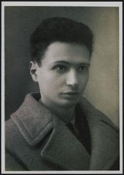
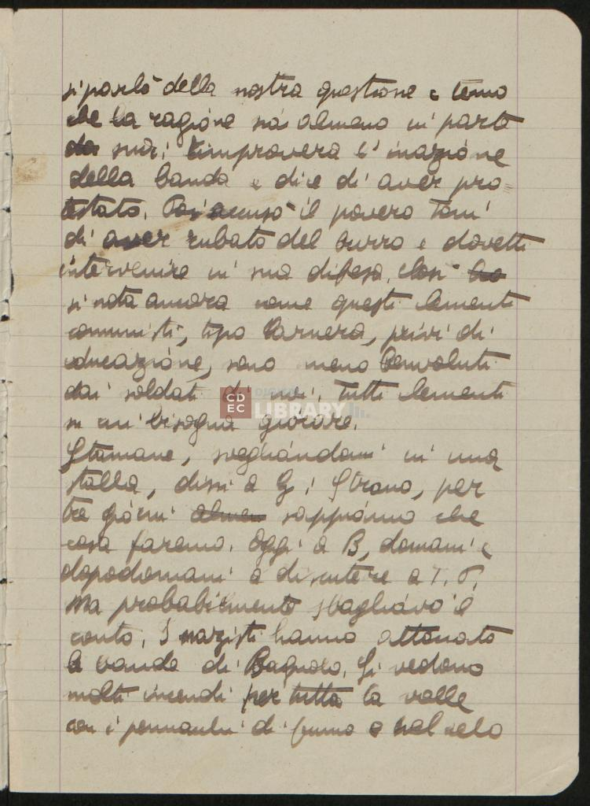
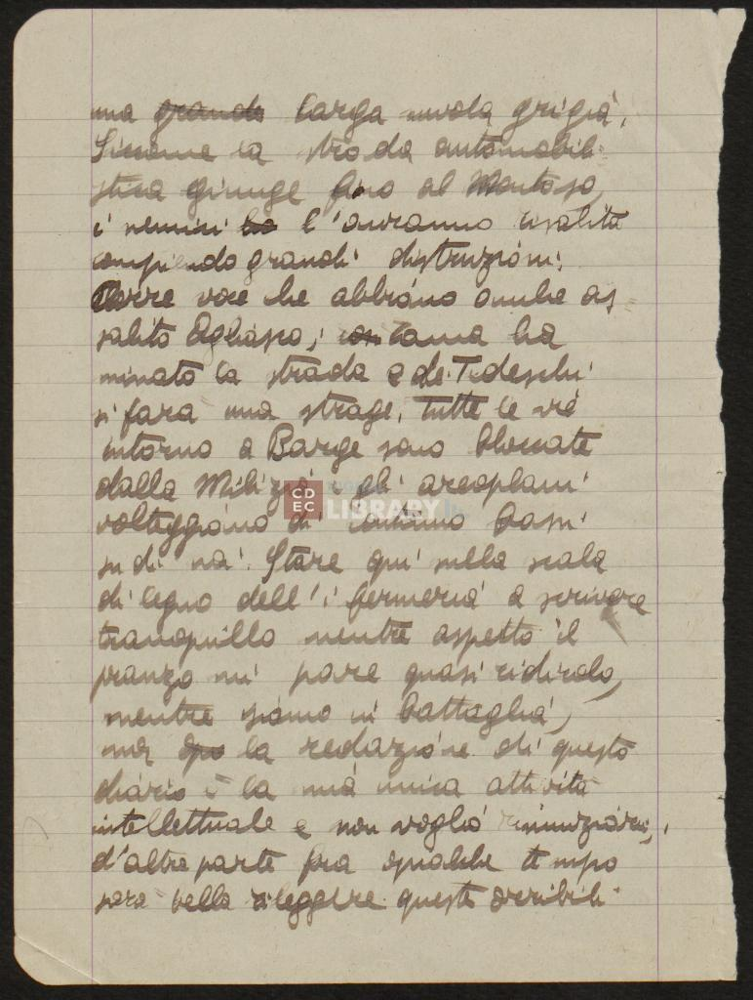
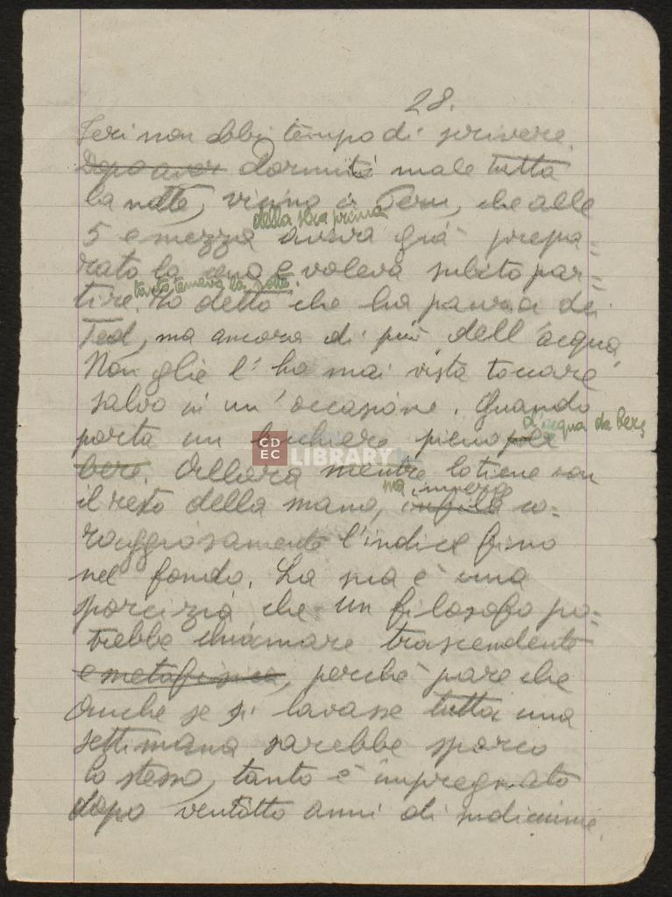

Emanuele Artom nasce ad Aosta il 23 giugno 1915, figlio di Emilio ed Amalia Segre. Tra i collaboratori del grande Dizionario enciclopedico Utet già dal 1935, nel novembre 1937 ottiene la laurea in lettere presso l'Università di Torino e, sempre nel 1937, in collaborazione con Guido Bonfiglioli pubblica il volume "Elena o della Parodia". Qualche anno dopo, nel 1941 pubblica la prima edizione dei "Principi di storia e cultura ebraica", in seguito più volte ristampato. Antifascista, nel maggio 1943 Artom si iscrive al Partito d'Azione. Dopo l'armistizio, con il nome di Eugenio Ansaldi, si arruola tra i partigiani come delegato azionista in una brigata garibaldina di Barge. In seguito viene nominato commissario politico delle bande "Italia Libera" operanti in Val Pellice e Val Germanasca. Catturato dai fascisti nel marzo 1944, Artom viene consegnato ai tedeschi e rinchiuso nelle Carceri Nuove di Torino, dove il 7 aprile 1944 muore a causa delle torture inflittegli.

Diari di Emanuele Artom
Trascrizione digitale delle pagine 107, 108 e 109
Biografia
Descrizione
- Titolo: Diari
- Autore: Emanuele Artom
- Data: 30 novembre 1943 - 2 dicembre 1943
- Lingua: Italiano
- Storia editoriale: Le pagine del diario sono stata scritte da Emanuele Artom tra novembre 1943 fino a febbraio 1944 e riguardano la sua esperienza partigiana. Queste pagine sono state raccolte dalla madre, Amalia Segre, per il bisogno di ricordare o trasmettere le memorie del figlio.
- Acquisizione: Alla morte della madre, come da lei chiesto nell'epigrafe, le pagine del diario sono state consegnate al Centro di Documentazione Ebraica Contemporanea. Tutta la documentazione originale è stata ricondizionata e digitalizzata al fine di garantirne la consultabilità ai fini storici.
- Supporto: Fogli di carta
- Pagine: Il manoscritto è composto da 174 pagine: le prime due pagine contengono un appunto e la lettera originale di Amalia Segre, madre di Emanuele Artom, le restanti pagine contengono il diario.
- Condizioni: Il manoscritto è ben conservato, nonostante la presenza di alcuni bordi danneggiati. La lettura raramente è impedita da segni e/o macchie.
- Autore: Il manoscritto si apre con un'epigrafe scitta a mano da Amalia Segre. Il diario inizia dalla seconda pagina ed è stato scritto a mano da Emanuele Artom.
- Layout: Le pagine del diario sono scritte su unìunica colonna e generalmente presentano 20-25 righe ciascuna.
- Conservazione: Centro di Documentazione Ebraica Contemporanea
- Fondo: Fondo Emanuele Artom
- Codice: IT-CDEC-ST0003-000006 - busta 1, fascicolo 9
- Luogo: Milano
Pagina 107

1
si parlò della nostra questione e temo
2 che la ragione sia almeno in parte
3 da sua: rimproverava l'inazione
4 della banda e dice di aver pro=
5 testato. Poi accusò il povero Toni
6 di aver rubato del burro e dovetti
7 intervenire in sua difesa, ? ho
8 si nota ancora come questi elementi
9 comunisti, tipo Cornera, privi di
10 educazione, sono meno benvoluti
11 dai soldati di noi, tutti elementi
12 su cui bisogna giocare.
13 StamaneStamani, svegliandomi in una
14 stalla, dissi a GGiorgio : "Strano, per
15 tre giorni almeno sappiamo che
16 cosa faremo. Oggi a BBarge, domani ?
17 dopodomani a discutere a T.P.Torre Pellice"
18 Ma probabilmente sbagliavo il
19 conto,. I nazisti hanno attaccato
20 le bande di Bagnolo. Si vedono
21 molti incenti per tutta la valle
22 con i pennacchi di fumo e nel cielo
2 che la ragione sia almeno in parte
3 da sua: rimproverava l'inazione
4 della banda e dice di aver pro=
5 testato. Poi accusò il povero Toni
6 di aver rubato del burro e dovetti
7 intervenire in sua difesa, ? ho
8 si nota ancora come questi elementi
9 comunisti, tipo Cornera, privi di
10 educazione, sono meno benvoluti
11 dai soldati di noi, tutti elementi
12 su cui bisogna giocare.
13 StamaneStamani, svegliandomi in una
14 stalla, dissi a GGiorgio : "Strano, per
15 tre giorni almeno sappiamo che
16 cosa faremo. Oggi a BBarge, domani ?
17 dopodomani a discutere a T.P.Torre Pellice"
18 Ma probabilmente sbagliavo il
19 conto,. I nazisti hanno attaccato
20 le bande di Bagnolo. Si vedono
21 molti incenti per tutta la valle
22 con i pennacchi di fumo e nel cielo
Cliccando sui bottoni sarà possibile vedere le modifiche apportate nella trascrizione digitale del testo rispetto alla pagina originale del diario.
Pagina 108

1
una grande larga nuvola
grigiàgrigia.
2 Siccome la strada automobili=
3 stica giunge fino al Montoso,
4 i nemici ha l'avranno risalita
5 compiendo grandi distruzioni.
6 Corre voce che abbiano anche as=
7 salito Agliasco; ? Zama ha
8 minato la strada e dei Tedeschitedeschi
9 si farà una strage, tutte le vie
10 intorno a Barge sono bloccate
11 dalla Miliziamilizia e gli aeroplani
12 volteggiano di continuo bassi
13 su di noi. Stare qui nella scala
14 di legno dell'i ? nfermeria a scrivere
15 tranquillo mentre aspetto il
16 pranzo mi pare quasi ridicolo,
17 mentre siamo in battaglia,
18 ma ? la redazione di questo
19 diario è la mia unica attività
20 intellettuale e non voglio rinunziarvirinunciarvi,
21 d'altra parte fra qualche t ? empo
22 sarà bello rileggere queste orribili
2 Siccome la strada automobili=
3 stica giunge fino al Montoso,
4 i nemici ha l'avranno risalita
5 compiendo grandi distruzioni.
6 Corre voce che abbiano anche as=
7 salito Agliasco; ? Zama ha
8 minato la strada e dei Tedeschitedeschi
9 si farà una strage, tutte le vie
10 intorno a Barge sono bloccate
11 dalla Miliziamilizia e gli aeroplani
12 volteggiano di continuo bassi
13 su di noi. Stare qui nella scala
14 di legno dell'i ? nfermeria a scrivere
15 tranquillo mentre aspetto il
16 pranzo mi pare quasi ridicolo,
17 mentre siamo in battaglia,
18 ma ? la redazione di questo
19 diario è la mia unica attività
20 intellettuale e non voglio rinunziarvirinunciarvi,
21 d'altra parte fra qualche t ? empo
22 sarà bello rileggere queste orribili
Cliccando sui bottoni sarà possibile vedere le modifiche apportate nella trascrizione digitale del testo rispetto alla pagina originale del diario.
Pagina 109

1
28
?
.
2 Ieri non ebbi tempo di scrivere.
3 Dopo aver dormitoDormii male tutta
4 la notte, vicino a Peru, che alle
5 5 e mezza della sera prima aveva già prepa=
6 rato la cena e voleva subito par=
7 tire tanto temeva la notte . Ho detto che ha paura dei
8 Tedtedeschi, ma ancora di più dell'acqua.
9 Non glie l'gliel'ho mai vista toccare
10 salvo in un'occasione, quando
11 porta un bicchiere pieno per d'acqua da bere
12 bere. Allora mentre lo tiene con
13 il resto della mano, infila ma immerge co=
14 raggiosamente l'indice fino
15 nel fondo. La sua è una
16 sporcizia che un filosofo po=
17 trebbe chiamare trascendente
18 e metafisica, perchèperché pare che
19 anche se si lavasse tutta una
20 settimana parrebbe sporco
21 lo stesso, tanto è impregnato
22 dopo ventotto anni di sudiciume.
2 Ieri non ebbi tempo di scrivere.
3 Dopo aver dormitoDormii male tutta
4 la notte, vicino a Peru, che alle
5 5 e mezza della sera prima aveva già prepa=
6 rato la cena e voleva subito par=
7 tire tanto temeva la notte . Ho detto che ha paura dei
8 Tedtedeschi, ma ancora di più dell'acqua.
9 Non glie l'gliel'ho mai vista toccare
10 salvo in un'occasione, quando
11 porta un bicchiere pieno per d'acqua da bere
12 bere. Allora mentre lo tiene con
13 il resto della mano, infila ma immerge co=
14 raggiosamente l'indice fino
15 nel fondo. La sua è una
16 sporcizia che un filosofo po=
17 trebbe chiamare trascendente
18 e metafisica, perchèperché pare che
19 anche se si lavasse tutta una
20 settimana parrebbe sporco
21 lo stesso, tanto è impregnato
22 dopo ventotto anni di sudiciume.
Cliccando sui bottoni sarà possibile vedere le modifiche apportate nella trascrizione digitale del testo rispetto alla pagina originale del diario.